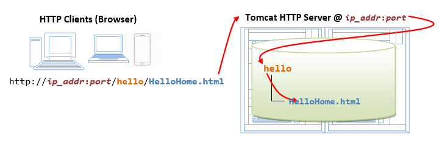
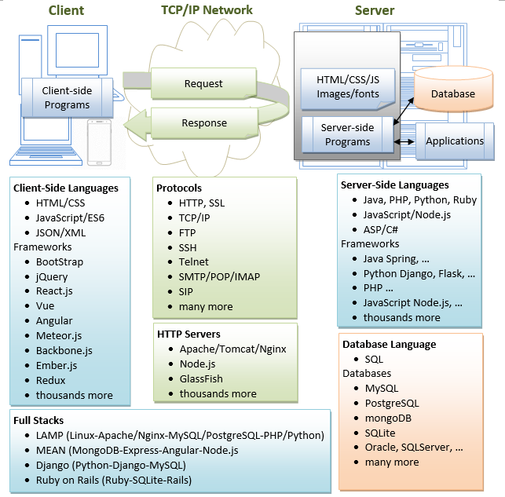

This practical can be completed in a 3-hour session.
This installation and configuration guide is applicable to Tomcat 10. Take note that Tomcat 10 is not compatible with Tomcat 9 - Applications that run on Tomcat 9 and earlier will not run on Tomcat 10 without changes. To install Tomcat 9, see "Tomcat9 - HowTo".
(Advanced) Java EE vs. Jakarta EE
Java Servlet is NOT part of JDK (or Java Standard Edition or Java SE). It was part of the "Java Enterprise Edition (Java EE)". In 2017, Oracle submitted "Java EE" to Eclipse Foundation (open source). Eclipse subsequently renamed "Java EE" to "Jakarta EE" (because Oracle owns the trademark "Java").
The EE versions are:
- (Under Sun Microsystem/Oracle) J2EE 1.2, J2EE 1.3, J2EE 1.4, Java EE 5, Java EE 6, Java EE 7, Java EE 8. Move to Eclipse Foundation.
- Jakarta EE 8, first Jakarta version (Sept 2019) is fully compatible with Java EE 8 (which is the last version of Java EE).
- Jakarta EE 9 (Dec 2020): API namespace moved from
javax.*tojakarta.* - Jakarta EE 10 (Sept 2022): Removal of deprecated items in Servlet, Faces, CDI and EJB (Entity Beans and Embedable Container).
- Jakarta EE 11 (July 2024): ??
"Java Servlet" is now called "Jakarta Servlet". "Java Server Pages (JSP)" is now called "Jakarta Server pages".
(Advanced) Differences between Tomcat 10 and Tomcat 9
Tomcat 10 (for Jakarta EE 9) moves all the Tomcat 9 (for Java EE 8) packages in the javax.* namespace to the jakarta.* namespace. You need to change the following import statements:
import jakarta.servlet.ServletException; // Tomcat 10 (Jakarta EE 9 onwards) import jakarta.servlet.http.HttpServlet; import jakarta.servlet.http.HttpServletRequest; import jakarta.servlet.http.HttpServletResponse; //import javax.servlet.ServletException; // Tomcat 9 (Java EE 8)(same as Jakarta EE 8) //import javax.servlet.http.HttpServlet; //import javax.servlet.http.HttpServletRequest; //import javax.servlet.http.HttpServletResponse;
Introduction
Web Application (Webapp)
A web application (or webapp), unlike standalone application, runs over the Internet. Examples of webapps are google, amazon, facebook and twitter.
A webapp is typically a 3-tier (or multi-tier) client-server database application run over the Internet as illustrated in the diagram below. It comprises five components:
- HTTP Server: E.g., Apache HTTP Server, Apache Tomcat Server, Microsoft Internet Information Server (IIS), nginx, Google Web Server (GWS), and others.
- HTTP Client (or Web Browser): E.g., Internet Explorer (MSIE), FireFox, Chrome, Safari, and others.
- Database: E.g., Open-source MySQL, PostgreSQL, Apache Derby, mSQL, SQLite, OpenOffice's Base; Commercial Oracle, IBM DB2, SAP SyBase, Microsoft SQL Server, Microsoft Access; and others.
- Client-Side Programs: Could be written in HTML Form, JavaScript, and others.
- Server-Side Programs: Could be written in Java Servlet/JSP, ASP, PHP, Perl, Python, JavaScript, and others.
A typical use case is:
- (client-to-server) A user, via a web browser (HTTP client), issues a URL request to an HTTP server to start a webapp.
- (server-to-client) The HTTP server returns an HTML form (client-side program), which is loaded and rendered in the client's browser.
- (client-to-server) The user fills up the query criteria inside the form and submits the form. This sends the query parameters to a server-side program.
- (server-to-client) The server-side program receives the query parameters, queries the database based on these parameters, and returns the query result to the client-side program.
- (client) The client-side program receives the query result and displays on the browser.
- The process repeats for the next request-response.
Hypertext Transfer Protocol (HTTP)
- HTTP is an application layer protocol runs over TCP/IP. The IP provides support for routing and addressing (via a unique IP address for machines connected to the Internet); while TCP supports multiplexing via 64K ports from port number 0 to 65535. The default port number assigned to HTTP is TCP port 80. (Notes: TCP Port numbers below 1024 are reserved for popular protocols such as HTTP, FTP, SMTP; Port numbers 1024 and above could be used for applications.)
- HTTP is an asynchronous request-response application-layer protocol. A client sends a request message to the server. The server then returns a response message to the client. In other words, HTTP is a pull protocol, a client pulls a page from the server (instead of server pushes pages to the clients).
- The syntax of the message is defined in the HTTP specification.
Apache Tomcat HTTP Server
Apache Tomcat is a Java-capable HTTP server, which could execute special Java programs known as "Java Servlet" and "Java Server Pages (JSP)". Tomcat is an open-source project, under the "Apache Software Foundation" (which also provides the most use, open-source, industrial-strength Apache HTTP Server). The mother site for Tomcat is http://tomcat.apache.org. Alternatively, you can find tomcat via the Apache mother site @ http://www.apache.org.
Tomcat was originally written by James Duncan Davison (then working in Sun Microsystem) in 1998, based on an earlier Sun's server called Java Web Server (JWS). It began at version 3.0 after JWS 2.1 it replaced. Sun subsequently made Tomcat open-source and gave it to Apache.
The various Tomcat releases are:
- Tomcat 3.0 (1999): Reference Implementation (RI) for Servlet 2.2 and JSP 1.1.
- Tomcat 4.1 (Sep 2002): RI for Servlet 2.3 and JSP 1.2.
- Tomcat 5.0 (Dec 2003): RI for Servlet 2.4 and JSP 2.0.
- Tomcat 6.0 (Feb 2007): RI for Servlet 2.5 and JSP 2.1.
- Tomcat 7.0 (Jan 2011): RI for Servlet 3.0, JSP 2.2 and EL 2.2.
- Tomcat 8.0 (Jun 2014): RI for Servlet 3.1, JSP 2.3, EL 3.0 and WebSocket 1.0. Tomcat 8.5 (June 2016) supports HTTP/2, OpenSSL, TLS virtual hosting and JASPIC 1.1.
- Tomcat 9.0 (Jan 2018): RI for Servlet 4.0, JSP 2.3, EL 3.0, WebSocket 1.0, JASPIC 1.1.
- Tomcat 10.0 (Feb 2021): Support Servlet 5.0, JSP 3.0, EL 4.0, WebSocket 2.0 and Authentication 2.0.
How to Install Tomcat and Get Started with Java Servlet Programming
STEP 0: Create a Directory to Keep all your Works
I shall assume that you have created a directory called "c:\myWebProject" (for Windows) or "~\myWebProject" (for macOS) in your earlier exercises. Do it otherwise. This step is important; otherwise, you will be out-of-sync with this article and will not be able to find your files later.
STEP 1: Download and Install Tomcat
For Windows
- Goto http://tomcat.apache.org ⇒ Look for "Tomcat 10.1.{xx} Released", where {xx} is the latest update number ⇒ Click "Download"
- Under Tomcat 10 Software Downloads ⇒ Look for "10.1.{xx}" ⇒ Binary Distributions ⇒ Core ⇒ "zip" (e.g., "
apache-tomcat-10.1.{xx}.zip", about 12MB). - UNZIP (right-click ⇒ Extract All) the downloaded file into your project directory "
c:\myWebProject". Tomcat shall be unzipped into directory "c:\myWebProject\apache-tomcat-10.1.{xx}". - For EASE OF USE, we shall SHORTEN and RENAME this directory to "
c:\myWebProject\tomcat".
Take note of Your Tomcat Installed Directory. Hereafter, I shall refer to the Tomcat installed directory as <TOMCAT_HOME>.
For macOS
- Goto http://tomcat.apache.org ⇒ Under "Tomcat 10.1.{xx} Released", where {xx} is the latest update number ⇒ Click "Download"
- Under Tomcat 10 Software Downloads ⇒ Look for "10.1.{xx}"⇒ Binary distribution ⇒ Core ⇒ "tar.gz" (e.g., "
apache-tomcat-10.1.{xx}.tar.gz", about 12 MB). - To install Tomcat:
- Double-click the downloaded tarball (e.g., "
apache-tomcat-10.1.{xx}.tar.gz") to expand it into a folder (e.g., "apache-tomcat-10.1.{xx}"). - Move the extracted folder (e.g., "
apache-tomcat-10.1.{xx}") to your project directory "~/myWebProject". - For EASE OF USE, we shall SHORTEN and RENAME this folder to "tomcat", i.e., "
~/myWebProject/tomcat".
- Double-click the downloaded tarball (e.g., "
Take note of Your Tomcat Installed Directory. Hereafter, I shall refer to the Tomcat installed directory as <TOMCAT_HOME>.
For Ubuntu
Read "How to Install Tomcat on Ubuntu". You need to switch between these two articles.
For academic learning, I recommend and show you how to use "zip" (or "tar.gz") packages. You could simply delete the entire directory when Tomcat is no longer needed (without running any un-installer). You are free to move or rename the Tomcat's installed directory. You can install (unzip) multiple copies of Tomcat in the same machine in different folders.
Tomcat's Sub-Directories
Take a quick look at the Tomcat installed directory. It contains the these sub-directories:
- bin: contains the binaries and scripts (e.g.,
startup.batandshutdown.batfor Windows;startup.shandshutdown.shfor Unixes and macOS). - conf: contains the system-wide configuration files, such as
server.xml,web.xml, andcontext.xml. - webapps: contains the webapps to be deployed. You can also place the WAR (Webapp Archive) file for deployment here.
- lib: contains the Tomcat's system-wide library JAR files, accessible by all webapps. You could also place external JAR file (such as MySQL JDBC Driver) here.
- logs: contains Tomcat's log files. You may need to check for error messages here.
- work: Tomcat's working directory used by JSP, for JSP-to-Servlet conversion.
STEP 2: Create an Environment Variable JAVA_HOME (Don't Miss this Step)
(For Windows)
You need to create an environment variable (system variable available to all applications) called "JAVA_HOME", and set it to your JDK installed directory.
Follow the steps HERE!
(For macOS)
Skip this step. No need to do anything.
STEP 3: Configure the Tomcat Server
The Tomcat configuration files, in XML format, are located in the "conf" sub-directory of your Tomcat installed directory, e.g. "c:\myWebProject\tomcat\conf" (for Windows) or "~/myWebProject/tomcat/conf" (for macOS). The important configuration files are:
server.xmlweb.xmlcontext.xml
Make a BACKUP of the configuration files before you proceed!!!
Step 3(a) "conf\server.xml" - Set the TCP Port Number
Use a Programming Text Editor (e.g., Sublime Text, Atom) to open the configuration file "server.xml".
The default TCP port number configured in Tomcat is 8080, you may choose any number between 1024 and 65535, which is not used by existing applications. We shall choose 9999 in this article. (For production server, you should use port 80, which is pre-assigned to HTTP server as the default port number.)
Locate the following lines (around Line 68) that define the HTTP connector, and change port="8080" to port="9999".
<!-- A "Connector" represents an endpoint by which requests are received and responses are returned. Documentation at : Java HTTP Connector: /docs/config/http.html Java AJP Connector: /docs/config/ajp.html APR (HTTP/AJP) Connector: /docs/apr.html Define a non-SSL HTTP/1.1 Connector on port 8080 --> <Connector port="9999" protocol="HTTP/1.1" connectionTimeout="20000" redirectPort="8443" />
Step 3(b) "conf\web.xml" - Enable Directory Listing
Again, use a programming text editor to open the configuration file "web.xml".
We shall enable directory listing by changing "listings" from "false" to "true" for the "default" servlet. This is handy for test system, but not for production system for security.
Locate the following lines (around Line 122) that define the "default" servlet; and change the "listings" from "false" to "true".
<servlet> <servlet-name>default</servlet-name> <servlet-class>org.apache.catalina.servlets.DefaultServlet</servlet-class> <init-param> <param-name>debug</param-name> <param-value>0</param-value> </init-param> <init-param> <param-name>listings</param-name> <param-value>true</param-value> </init-param> <load-on-startup>1</load-on-startup> </servlet>
Step 3(c) "conf\context.xml" - Enabling Automatic Reload
We shall add the attribute reloadable="true" to the <Context> element to enable automatic reload after code changes. Again, this is handy for test system but not recommended for production, due to the overhead of detecting changes.
Locate the <Context> start element (around Line 19), and change it to:
<Context reloadable="true" crossContext="true" parallelAnnotationScanning="true">
......
......
</Context>
STEP 4: Start Tomcat Server
The Tomcat's executable programs and scripts are kept in the "bin" sub-directory of the Tomcat installed directory.
Step 4(a) Start Server
For Windows
I shall assume that Tomcat is installed in "c:\myWebProject\tomcat". Launch a CMD shell and issue:
c: // Change drive cd \myWebProject\tomcat\bin // Change directory to your Tomcat's binary directory startup // Run startup.bat to start tomcat serverIf "Windows Defender Firewall" pops up, choose "Allow Access".
For macOS
I assume that Tomcat is installed in "~/myWebProject/tomcat". To start the Tomcat server, open a new "Terminal" and issue:
cd ~/myWebProject/tomcat/bin // Change directory to your Tomcat's binary directory ./catalina.sh run // Run catalina.sh to start tomcat server
Tomcat's Console
(For Windows) A new Tomcat console window appears. Look for this new console on your taskbar.
Study the messages (as follows) on the console. Look out for the Tomcat's port number. Double check that Tomcat is running on port 9999 as configured.
............ ............ xxxxx INFO [main] org.apache.coyote.AbstractProtocol.start Starting ProtocolHandler ["http-nio-9999"] xxxxx INFO [main] org.apache.coyote.AbstractProtocol.start Starting ProtocolHandler ["ajp-nio-8009"] xxxxx INFO [main] org.apache.catalina.startup.Catalina.start Server startup in [1325] ms
Error messages will be sent to this console. System.out.println() issued by your Java servlets will also be sent to this console.
(Skip Unless ...) Cannot Start Tomcat: Read "How to Debug".
Step 4(b) Start a Client to Access the Server
Start a browser (Firefox, Chrome) as an HTTP client. Issue URL "http://localhost:9999" to access the Tomcat server's welcome page. The hostname "localhost" (with IP address of 127.0.0.1) is meant for local loop-back testing within the same machine. For users on the other machines over the net, they have to use the server's IP address or DNS domain name in the form of "http://serverHostnameOrIPAddress:9999".
(Optional) Try issuing URL http://localhost:9999/examples to view the servlet and JSP examples. Try running some of the servlet examples.
Step 4(c) Shutdown Server
For Windows
You can shutdown the tomcat server by either:
- Press Ctrl-C on the Tomcat console; OR
- Run "
<TOMCAT_HOME>\bin\shutdown.bat" script. Open a new "cmd" and issue:c: // Change the current drive cd \myWebProject\tomcat\bin // Change directory to your Tomcat's binary directory shutdown // Run shutdown.bat to shutdown the server
For macOS
To shutdown the Tomcat server:
- Press Control-C (NOT Command-C) on the Tomcat console; OR
- Run the "
<TOMCAT_HOME>/bin/shutdown.sh" script. Open a new "Terminal" and issue:cd ~/myWebProject/tomcat/bin // Change current directory to Tomcat's bin directory ./shutdown.sh // Run shutdown.sh to shutdown the server
WARNING: You MUST properly shutdown the Tomcat. DO NOT kill the CAT by pushing the window's "CLOSE" button.
STEP 5: Develop and Deploy a "Hello-world" WebApp
Step 5(a) Create the Directory Structure for your WebApp

Let's call our first webapp "hello". Goto Tomcat's "webapps" sub-directory and create the following directory structure for your webapp "hello" (as illustrated).
- Under Tomcat's "
webapps", create your webapp's root directory "hello" (i.e., "<TOMCAT_HOME>\webapps\hello"). - Under "
hello", create a sub-directory "WEB-INF" (case sensitive, it is a "dash" NOT an underscore) (i.e., "<TOMCAT_HOME>\webapps\hello\WEB-INF"). - Under "
WEB-INF", create a sub-sub-directory "classes" (case sensitive, lowercase and plural) (i.e., "<TOMCAT_HOME>\webapps\hello\WEB-INF\classes").
These directory names are case-sensitive!!! Don't make typo error!!! Double check the SPELLING again and again!!!
You need to keep your web resources (e.g., HTMLs, CSSs, images, scripts, servlets, JSPs) in the proper directories:
- "
hello": The is called the context root (or document base directory) of your webapp. You should keep all your HTML files and resources visible to the web users (e.g., HTMLs, CSSs, images, scripts, JSPs) under this context root. - "
hello/WEB-INF": This directory, although under the context root, is a secure directory (i.e., not visible to web users). It is used to store resources that should not be directly accessible by clients; but accessible through servlets or other server-side components. This is also where you keep your application's web descriptor file "web.xml". - "
hello/WEB-INF/classes": This is where you keep all the Java classes such as servlet class-files.
You need to RE-START your Tomcat server to pick up the hello webapp. Check the Tomcat's console to confirm that "hello" application has been properly deployed:
...... xxxxx INFO [main] org.apache.catalina.startup.HostConfig.deployDirectory Deploying web application directory [xxx\webapps\hello] xxxxx INFO [main] org.apache.catalina.startup.HostConfig.deployDirectory Deployment of web application directory [xxx\webapps\hello] has finished in [38] ms ......
You can issue the following URL to access the web application "hello":
http://localhost:9999/hello
You should see the directory listing of the directory "<TOMCAT_HOME>\webapps\hello", which shall be empty at this point of time. Take note that we have earlier enabled directory listing in "web.xml". Otherwise, you will get an error "404 Not Found".
Step 5(b) Write a Welcome Page
Create the following HTML page and save as "HelloHome.html"
in your webapp's root directory "hello".
1 2 3 4 5 6 7 8 |
<!DOCTYPE html>
<html>
<head><title>My Home Page</title></head>
<body>
<h1>Hello, world!</h1>
<p>My Name is so and so. This is my HOME.</p>
</body>
</html>
|
You can browse this page by issuing this URL:
http://localhost:9999/hello/HelloHome.html
Alternatively, you can issue an URL to your webapp's root "hello":
http://localhost:9999/hello
The server will return the directory listing of your base directory. You can then click on "HelloHome.html".
Rename "HelloHome.html" to "index.html", and issue a directory request again:
http://localhost:9999/hello
Now, the server will redirect the directory request to "index.html", if the root directory contains an "index.html", instead of serving the directory listing.
Rename "index.html" back to "HelloHome.html", so that you could see get directory listing for convenience.
You can check out the home page of your peers by issuing:
http://YourPeerHostnameOrIPAddr:9999/hello http://YourPeerHostnameOrIPAddr:9999/hello/HelloHome.html
with a valid "YourPeerHostnameOrIPAddr", provided that your peer has started his tomcat server and his firewall (and the network) does not block your access. You can use command such as "ipconfig" (Windows), "ifconfig" (macOS and Unix) to find your IP address.
(Skip Unless...) The likely errors are "Unable to Connect", "Internet Explorer cannot display the web page", and "404 File Not Found". Read "How to Debug" section.
STEP 6: Write a "Hello-world" Java Servlet
A servlet is Java program that runs inside a Java-capable HTTP Server, such as Apache Tomcat. A web user invokes a servlet by issuing an appropriate URL from a web browser (HTTP client).
Before you proceed, I shall assume that you are familiar with Java Programming and have installed the followings:
- JDK (Read "How to install JDK and Get Started").
- A programming text editor, such as Sublime Text or Atom.
Step 6(a): Write a "Hello-world" Java Servlet
A Java servlet is a Java program that runs inside a HTTP server. A web user invokes a servlet by issuing a URL from a browser (or HTTP client).
In this example, we are going to write a Java servlet called HelloServlet, which says "Hello, world!". We will configure such that web users can invoke this servlet by issuing URL http://ip_addr:port/hello/sayhello from their browser, as illustrated:
Write the following source codes called "HelloServlet.java" and save it under your application "classes" directory (i.e., "<TOMCAT_HOME>\webapps\hello\WEB-INF\classes\HelloServlet.java"). This servlet says "Hello", echoes some request information, and prints a random number upon each request.
1 2 3 4 5 6 7 8 9 10 11 12 13 14 15 16 17 18 19 20 21 22 23 24 25 26 27 28 29 30 31 32 33 34 35 36 37 38 39 40 41 42 |
// To save as "<TOMCAT_HOME>\webapps\hello\WEB-INF\classes\HelloServlet.java" import java.io.*; import jakarta.servlet.*; // Tomcat 10 import jakarta.servlet.http.*; // Tomcat 10 import jakarta.servlet.annotation.*; // Tomcat 10 //import javax.servlet.*; // Tomcat 9 //import javax.servlet.http.*; // Tomcat 9 //import javax.servlet.annotation.*; // Tomcat 9 @WebServlet("/sayhello") // Configure the request URL for this servlet (Tomcat 7/Servlet 3.0 upwards) public class HelloServlet extends HttpServlet { // The doGet() runs once per HTTP GET request to this servlet. @Override public void doGet(HttpServletRequest request, HttpServletResponse response) throws IOException, ServletException { // Set the response's MIME type of the response message response.setContentType("text/html"); // Allocate an output writer to write the response message into the network socket PrintWriter out = response.getWriter(); // throw IOException // Write the response message, in an HTML page out.println("<!DOCTYPE html>"); out.println("<html>"); out.println("<head><title>Hello, World</title></head>"); out.println("<body>"); out.println("<h1>Hello, world!</h1>"); // says Hello // Echo some selected client's request information out.println("<p>Request URI: " + request.getRequestURI() + "</p>"); out.println("<p>Protocol: " + request.getProtocol() + "</p>"); out.println("<p>PathInfo: " + request.getPathInfo() + "</p>"); out.println("<p>Remote Address: " + request.getRemoteAddr() + "</p>"); // Generate a random number on "each" request via JDK function Math.random() out.println("<p>A Random Number: <strong>" + Math.random() + "</strong></p>"); out.println("</body></html>"); out.close(); // Always close the output writer // For testing and debugging - Print a message to Tomcat's console System.out.println("hello world, to Tomcat!"); // Check Tomcat's console for this message } } |
Take note that in Line 10, we map this HelloServlet to URL "/sayhello" via annotation @WebServlet("/sayhello"). That is, the full URL shall be http://ip_addr:port/hello/sayhello to trigger this HelloServlet.
Step 6(b): Compiling the Servlet (DIFFICULT)
We need the Java Servlet API to compile the servlet. Servlet API is NOT part of JDK (or Java SE), but belongs to Java EE (or now Jakarta EE). Tomcat provides a copy in <TOMCAT_HOME>/lib/servlet-api.jar. We need to include this JAR file in the compilation via the -cp (classpath) option as follows:
(For Windows)
// Assume that <TOMCAT_HOME> is c:\myWebProject\tomcat
// Change directory to the Java source directory
c:
cd \myWebProject\tomcat\webapps\hello\WEB-INF\classes
// Compile with servlet API library (servlet-api.jar) with option -cp (or --class-path)
javac -cp ..\..\..\..\lib\servlet-api.jar HelloServlet.java
// .. refers to the parent directory
// ..\..\..\..\lib refers to "c:\myWebProject\tomcat\lib"
(For macOS)
// Assume that <TOMCAT_HOME> is ~/myWebProject/tomcat where ~ is $HOME // Change directory to the Java source directory cd ~/myWebProject/tomcat/webapps/hello/WEB-INF/classes // Compile with Servlet API - Need to use $HOME instead of ~ in the "javac" command javac -cp ../../../../lib/servlet-api.jar HelloServlet.java // .. refers to the parent directory // ../../../../lib refers to "$HOME/myWebProject/tomcat/lib"
The output of the compilation is "HelloServlet.class".
Use your "File Explorer (Windows)" or "Finder (macOS)" to check the "webapps/hello/WEB-INF/classes" folder to make sure that "HelloServlet.class" has been created in the right place.
Step 6(c): Invoke the Servlet
Restart your Tomcat Server.
Servlet runs inside the servlet container in the web server. Unlike traditional C/Java programs, there is NO main() method to start the servlet. Instead, it is triggered by the URL configured.
To invoke the HelloServlet, start a browser and issue the URL configured (in @WebServlet) as follows:
http://localhost:9999/hello/sayhello
You shall see the output of the servlet displayed in your web browser. Refresh the browser, you shall see a new random number upon each refresh. In other word, the doGet() method of the servlet runs once per HTTP request.
(Skip Unless...) The likely errors are "404 File Not Found" and "500 Internal Server Error". Read "How to debug" Section.
Step 6(d): Tomcat's Console
- Goto Tomcat's console, look for the hello-world message printed via
System.out.println("hello world, from Tomcat!"). - Make some changes to the
HelloServlet, e.g., in Line 40:System.out.println("hello world, from Tomcat again and again!"); - Recompile the
HelloServlet.java. - Goto Tomcat's console, look for the servlet-reloading message, e.g.,
...... INFO [Catalina-utility-2] org.apache.catalina.core.StandardContext.reload Reloading Context with name [/hello] has started ............ ...... INFO [Catalina-utility-2] org.apache.catalina.core.StandardContext.reload Reloading Context with name [/hello] is completed
- Goto the browser, and refresh your page
http://localhost:9999/hello/sayhello. You shall see the new message printed to the Tomcat's console. - If you did not find the servlet-reload message in the Tomcat's console (bug?!). You need to re-start the Tomcat for the new servlet to take effect.
Step 6(e): View Page Source
(For Firefox and Chrome) Right-click the page ⇒ "View Page Source" to look at the output received by the web browser (which is returned by the server). Take note that the web browser receives only the output of the servlet (generated via the out.println() statements). The client has no access to the servlet source codes (which may contain confidential information).
(For macOS's Safari browser) You need to enable "Developer Menu" under the "Preferences" to enable the "View Source" menu.
<!DOCTYPE html> <html> <head><title>Hello, World</title></head> <body> <h1>Hello, world!</h1> <p>Request URI: /hello/sayhello</p> <p>Protocol: HTTP/1.1</p> <p>PathInfo: null</p> <p>Remote Address: 127.0.0.1</p> <p>A Random Number: <strong>0.3523682325749493</strong></p> </body> </html>
Step 6(f): Triple-quoted Multi-line Strings (or Text Blocks)
Starting with JDK 15, JDK supports triple-quoted Multi-line Strings (or Text Block). You can write one out.println() as follows:
// Write the response message, in an HTML page // Using triple-quoted multi-line string (Text Block) (JDK 15) // The beginning triple-quote must be in its own line (i.e., ends with a newline) out.println(""" <!DOCTYPE html> <html> <head><title>Hello, World</title></head> <body> <h1>Hello, world!</h1> <p>Request URI: %s</p> <p>Protocol: %s</p> <p>PathInfo: %s</p> <p>Remote Address: %s</p> <p>A Random Number: <strong>%f</strong></p> </body> </html> """.formatted(request.getRequestURI(), request.getProtocol(), request.getPathInfo(), request.getRemoteAddr(), Math.random()));
Notes:
- The beginning triple-quote shall be on its own line, i.e., ends with a newline.
- The left-margin is set by shifting to the left until the line with the least leading white space has no leading white space.
- You can use
str.formatted()(NOTformat()) to work with place holders (%s,%f,%d) in thestr, just likeSystem.out.printf()andString.format(). - JDK 21 introduces embedded template (inside the string) in the form of
\{expr}, as a preview feature. For example, you can replace%fwith\{Math.random()}in the above example.
Step 6(g)(Optional): Inspecting HTTP Request and Response Messages
When you enter a URL (e.g., http://localhost:9999/hello/sayhello) on a web browser, an HTTP GET request message is sent to the server; and the server returns a response message for display on the web browser. You can inspect the request and response messages via Web browser's Developer Tool.
For Firefox/Chrome, press F12 (called F12 debugger) to enable "Web Console" or "Developer Tool". Choose "Console" or "Network" pane. Enter URL http://localhost:9999/hello/sayhello (or refresh). Under "Net" or "Network". Expand the link http://localhost:9999/hello/sayhello. A HTTP message consists of a header and a body. Inspect the request header and body; as well as the response header and body.
The request message header is as follows:
GET http://localhost:9999/hello/sayhello HTTP/1.1 Host: localhost:9999 Accept: text/html,application/xhtml+xml,application/xml;q=0.9,*/*;q=0.8 Accept-Encoding: gzip, deflate Accept-Language: en-US,en;q=0.5 Cache-Control:max-age=0 Connection: keep-alive Upgrade-Insecure-Requests: 1 User-Agent: Mozilla/5.0 (Windows NT 10.0; WOW64; rv:52.0) Gecko/20100101 Firefox/52.0
For this request, there is no request message body.
The response message header is as follows:
HTTP/1.1 200 OK Date: xxx, xx xxx xxxx xx:xx:xx xxx Content-Length: 286 Content-Type: text/html;charset=ISO-8859-1
The response message body is as follows:
<!DOCTYPE html> <html> <head><title>Hello, World</title></head> <body> <h1>Hello, world!</h1> <p>Request URI: /hello/sayhello</p> <p>Protocol: HTTP/1.1</p> <p>PathInfo: null</p> <p>Remote Address: 0:0:0:0:0:0:0:1</p> <p>A Random Number: <strong>0.4480280769255568</strong></p> </body></html>
Step 6(h)(Optional): Using cURL (Client URL)
You can also use utility cURL (client URL) to inspect the HTTP request and response messages, by issuing curl command from CMD/Terminal:
curl -v http://localhost:9999/hello/sayhello * Trying [::1]:9999... * Connected to localhost (::1) port 9999 > GET /hello/sayhello HTTP/1.1 > Host: localhost:9999 > User-Agent: curl/8.4.0 > Accept: */* > < HTTP/1.1 200 < Content-Type: text/html;charset=UTF-8 < Content-Length: 297 < Date: Sun, 14 Apr 2024 09:43:16 GMT < <!DOCTYPE html> <html> <head><title>Hello, World</title></head> <body> <h1>Hello, world!</h1> <p>Request URI: /hello/sayhello</p> <p>Protocol: HTTP/1.1</p> <p>PathInfo: null</p> <p>Remote Address: 0:0:0:0:0:0:0:1</p> <p>A Random Number: <strong>0.251389</strong></p> </body> </html> * Connection #0 to host localhost left intact
Notes:
- cURL is a command line tool that enables data exchange between a client and a server using various network protocols through a terminal.
- The request header is marked by a leading >. There is no request body.
- The response header is marked by a leading < followed by the response body.
STEP 7: Write a Database Servlet
This section assumes that you are familiar with "Java database programming" and "MySQL database server". Otherwise, read "Java Database Program" and "How to Install MySQL and Get Started", respectively.
Step 7(a): Setup a Database on MySQL (Already done in the MySQL exercises)
Start your MySQL server. Take note of the server's port number. I shall assume that the MySQL server is running on port 3306, whereas the Tomcat is running on port 9999.
// For Windows: I shall assume that MySQL is installed in "c:\myWebProject\mysql" c: cd \myWebProject\mysql\bin mysqld --console // For macOS // Use graphical control at "System Preferences" -> MySQL
Start a MySQL client. I shall assume that there is a user called "myuser" with password "xxxx".
// For Windows: I shall assume that MySQL is installed in "c:\myWebProject\mysql" c: cd \myWebProject\mysql\bin mysql -u myuser -p // For macOS: I shall assume that MySQL is installed in "/usr/local/mysql" cd /usr/local/mysql/bin ./mysql -u myuser -p
Run the following SQL statements to create a database called "ebookshop", with a table called "books" with 5 columns: id, title, author, price, qty.
create database if not exists ebookshop; use ebookshop; drop table if exists books; create table books ( id int, title varchar(50), author varchar(50), price float, qty int, primary key (id)); insert into books values (1001, 'Java for dummies', 'Tan Ah Teck', 11.11, 11); insert into books values (1002, 'More Java for dummies', 'Tan Ah Teck', 22.22, 22); insert into books values (1003, 'More Java for more dummies', 'Mohammad Ali', 33.33, 33); insert into books values (1004, 'A Cup of Java', 'Kumar', 55.55, 55); insert into books values (1005, 'A Teaspoon of Java', 'Kevin Jones', 66.66, 66); select * from books;
Step 7(b): Install MySQL JDBC Driver (Already done in the previous JDBC exercises)
You need to download MySQL JDBC driver if you have not done so. Read "Installing the MySQL JDBC Driver".
Step 7(c): Copy the MySQL JDBC Driver to Tomcat's "lib" (IMPORTANT!!! DON'T MISS THIS STEP!!!)
Copy the MySQL JDBC Driver Connector/J (which you installed in previous JDBC session) JAR file "mysql-connector-j-8.3.{xx}.jar" into Tomcat's lib directory, i.e., "c:\myWebProject\tomcat\lib" (for Windows) or "~\myWebProject\tomcat\lib" (macOS).
You need to re-start the Tomcat Server.
Step 7(d): Write a Client-side HTML Form
Let's write an HTML script to create a query form with 3 checkboxes and a submit button, as illustrated below. Save the HTML file as querybook.html in your application root directory <TOMCAT_HOME>\webapps\hello.
1 2 3 4 5 6 7 8 9 10 11 12 13 14 15 16 |
<!DOCTYPE html> <html> <head> <title>Yet Another Bookshop</title> </head> <body> <h2>One More Bookshop</h2> <form method="get" action="http://localhost:9999/hello/query"> <b>Choose an author:</b> <input type="checkbox" name="author" value="Tan Ah Teck" />Ah Teck <input type="checkbox" name="author" value="Mohammad Ali" />Ali <input type="checkbox" name="author" value="Kumar" />Kumar <input type="submit" value="Search" /> </form> </body> </html> |
You can browse the HTML page by issuing the following URL:
http://localhost:9999/hello/querybook.html
Check a box (e.g., "Tan Ah Teck") and click the "Search" button. You are expected to get an error "404 File Not Found", as you have yet to write the server-side program.
But observe the URL in the browser's navigation bar, reproduced as follows:
http://localhost:9999/hello/query?author=Tan+Ah+Teck
Query String and NAME=VALUE pairs
The above URL consists of two parts:
- the URL extracted from the "
action" attribute of the<form>tag. - a so-called query string begins with a
'?', followed by "name=value" pair extracted from the selected<input>tag (i.e.,author=Tan+Ah+Teck). Take note that blanks are replaced by'+'(or%20- a'%'followed by ASCII code of blank in hex), because blanks are not allowed in the URL.
If you check two boxes (e.g., "Tan Ah Teck" and "Mohammad Ali"), you will trigger a query string with two "name=value" pairs separated by an '&'.
http://localhost:9999/hello/query?author=Tan+Ah+Teck&author=Mohammad+Ali
Step 7(e): Write the Server-side Database Query Servlet
The next step is to write a Java servlet, which responses to the clients request by querying the database and returns the query results.
1 2 3 4 5 6 7 8 9 10 11 12 13 14 15 16 17 18 19 20 21 22 23 24 25 26 27 28 29 30 31 32 33 34 35 36 37 38 39 40 41 42 43 44 45 46 47 48 49 50 51 52 53 54 55 56 57 58 59 60 61 62 63 64 65 66 67 68 69 70 71 |
// To save as "<TOMCAT_HOME>\webapps\hello\WEB-INF\classes\QueryServlet.java". import java.io.*; import java.sql.*; import jakarta.servlet.*; // Tomcat 10 import jakarta.servlet.http.*; import jakarta.servlet.annotation.*; //import javax.servlet.*; // Tomcat 9 //import javax.servlet.http.*; //import javax.servlet.annotation.*; @WebServlet("/query") // Configure the request URL for this servlet (Tomcat 7/Servlet 3.0 upwards) public class QueryServlet extends HttpServlet { // The doGet() runs once per HTTP GET request to this servlet. @Override public void doGet(HttpServletRequest request, HttpServletResponse response) throws ServletException, IOException { // Set the MIME type for the response message response.setContentType("text/html"); // Get an output writer to write the response message into the network socket PrintWriter out = response.getWriter(); // Print an HTML page as the output of the query out.println(""" <!DOCTYPE html> <html> <head> <title>Query Response</title> </head> <body> """; // using triple-quoted multi-line String try ( // Step 1: Allocate a database 'Connection' object Connection conn = DriverManager.getConnection( "jdbc:mysql://localhost:3306/ebookshop?allowPublicKeyRetrieval=true&useSSL=false&serverTimezone=UTC", "myuser", "xxxx"); // For MySQL // The format is: "jdbc:mysql://hostname:port/databaseName", "username", "password" // Step 2: Allocate a 'Statement' object in the Connection Statement stmt = conn.createStatement(); ) { // Step 3: Execute a SQL SELECT query String sqlStr = "select * from books where author = " + "'" + request.getParameter("author") + "'" // Single-quote SQL string + " and qty > 0 order by price desc"; out.println("<h3>Thank you for your query.</h3>"); out.println("<p>Your SQL statement is: " + sqlStr + "</p>"); // Echo for debugging ResultSet rset = stmt.executeQuery(sqlStr); // Send the query to the server // Step 4: Process the query result set int count = 0; while(rset.next()) { // Print a paragraph <p>...</p> for each record out.println("<p>" + rset.getString("author") + ", " + rset.getString("title") + ", $" + rset.getDouble("price") + "</p>"); count++; } out.println("<p>==== " + count + " records found =====</p>"); } catch(SQLException ex) { out.println("<p>Error: " + ex.getMessage() + "</p>"); // for debugging out.println("<p>Check Tomcat console for details.</p>"); ex.printStackTrace(); } // Step 5: Close conn and stmt - Done automatically by try-with-resources (JDK 7) out.println("</body></html>"); out.close(); } } |
Take note that in Line 8, we configure this QueryServlet to URL "/query" via annotation @WebServlet("/query"). In other words, the full URL to trigger this QueryServlet is http://ip_addr:port/hello/query, which corresponds to the "action" attribute of the <form> tag of the "querybook.html" written earlier.
Compile "QueryServlet.java" with the Servlet API library as follows:
// Windows c: cd \myWebProject\tomcat\webapps\hello\WEB-INF\classes javac -cp ..\..\..\..\lib\servlet-api.jar QueryServlet.java // macOS cd ~/myWebProject/tomcat/webapps/hello/WEB-INF/classes javac -cp ../../../../lib/servlet-api.jar QueryServlet.java
Use a "File Explorer" (Windows) or Finder (macOS), verify that "QueryServlet.class" was generated in the "classes" directory.
Step 7(f): Invoke the Servlet from the Client-Side Form with Query String
Issue the following URL to browse the HTML form "querybook.html" that you have created earlier:
http://localhost:9999/hello/querybook.html
Select an author (e.g., "Tan Ah Teck") and click the submit button, which activates the following URL coded in the <form>'s "action" attribute, together with a query string of NAME=VALUE pair:
http://localhost:9999/hello/query?author=Tan+Ah+Teck
The above URL "/query" maps to QueryServlet.
Using method request.getParameter(NAME) to handle NAME=VALUE pair
We can use the method request.getParameter() to handle the NAME=VALUE pair in the query string. Specifically, the method request.getParameter(NAME) returns the VALUE, as illustrated below:
The above query string has a NAME=VALUE pair of author=Tan+Ah+Teck. In Line 38, the method request.getParameter("author") returns a string "Tan Ah Teck", which is inserted into the SQL SELECT command:
select * from books where author = 'Tan Ah Teck' and qty > 0 order by price desc
In this way, the SQL SELECT command is formed based on the user's selection in the form.
(Skip Unless...) If you see a blank screen or incorrect output, look for error messages from the Tomcat console!!! Check "How to debug" Database Servlet Errors.
(Obsolete and Don't Do)(Prior to Tomcat 7) Deploying Servlets using web.xml
Please skip this section. I keep it here just in case...
The annotation @WebServlet("url") for deploying servlet is supported from Tomcat 7/Servlet 3.0. Prior to Tomcat 7, you need to deploy servlets via deployment descriptors in the web.xml configuration file.
Create the following configuration file called "web.xml", and save it under "webapps\hello\WEB-INF" (i.e., "<TOMCAT_HOME>\webapps\hello\WEB-INF\web.xml").
1 2 3 4 5 6 7 8 9 10 11 12 13 14 15 16 17 18 19 20 21 |
<?xml version="1.0" encoding="ISO-8859-1"?> <web-app version="3.0" xmlns="http://java.sun.com/xml/ns/javaee" xmlns:xsi="http://www.w3.org/2001/XMLSchema-instance" xsi:schemaLocation="http://java.sun.com/xml/ns/javaee http://java.sun.com/xml/ns/javaee/web-app_3_0.xsd"> <!-- To save as "hello\WEB-INF\web.xml" --> <servlet> <servlet-name>HelloWorld</servlet-name> <servlet-class>HelloServlet</servlet-class> </servlet> <!-- Note: All <servlet> elements MUST be grouped together and placed IN FRONT of the <servlet-mapping> elements --> <servlet-mapping> <servlet-name>HelloWorld</servlet-name> <url-pattern>/sayhello</url-pattern> </servlet-mapping> </web-app> |
In the above configuration, a servlet having a class file "HelloServlet.class" is mapped to request URL "/sayhello" (via an arbitrary servlet-name "HelloWorld"), under this web application "hello". In other words, the complete request URL for this servlet is "http://hostname:port/hello/sayhello".
This configuration file, saved under your webapp "hello", is applicable only to this particular webapp "hello".
Restart your Tomcat server to refresh the "web.xml" file.
Note: For EACH servlet, you need to write a pair of <servlet> and <servlet-mapping> elements with a common but arbitrary <servlet-name>. Take note that all the <servlet> elements MUST be grouped together and placed IN FRONT of the <servlet-mapping> elements.
A Full-Stack Web Developer
A full-stack web developer is a person who can develop both client and server software. He/She needs to be familiar the client-side (front-end) programming, server-side (back-end) programming and the database. You are now a step closer.
(Skip Unless...) How to Debug?
"Everything that can possibly go wrong will go wrong." The most important thing to do is to find the ERROR MESSAGES!!!
Always...
- Re-start Tomcat (and Check the Tomcat's console for Error Messages)!!!
- Re-start your browser!!!
- Refresh your browser using Ctrl-F5 (instead of refresh button or simply F5) to get a fresh copy, instead of from the cache.
- Check your spelling! Always assume that all programs are case-sensitive. Don't type, copy and paste if possible!
- and MOST IMPORTANTLY - Find the ERROR MESSAGE!!!
- Check the Error Messages on Tomcat's Console. Most of the error messages have a few screens of lines. You need to scroll up slowly from the last line to look for the FIRST LINE of the error messages.
com.mysql.jdbc.exceptions.jdbc4.CommunicationsException: Communications link failure <== First line The last packet sent successfully to the server was 0 milliseconds ago. The driver has not received any packets from the server. at sun.reflect.NativeConstructorAccessorImpl.newInstance0(Native Method) at sun.reflect.NativeConstructorAccessorImpl.newInstance(NativeConstructorAccessorImpl.java:57) at sun.reflect.DelegatingConstructorAccessorImpl.newInstance(DelegatingConstructorAccessorImpl.java:45) at java.lang.reflect.Constructor.newInstance(Constructor.java:525) ...... ...... at com.mysql.jdbc.NonRegisteringDriver.connect(NonRegisteringDriver.java:305) at java.sql.DriverManager.getConnection(DriverManager.java:579) at java.sql.DriverManager.getConnection(DriverManager.java:221) at MySQLJdbcTestJDK7.main(MySQLJdbcTestJDK7.java:7) <== Your program's line number here (line 7)
- Check the Tomcat's log files, located at "
<TOMCAT_HOME>\logs". The "catalina.yyyy-mm-dd.log" shows the Tomcat's startup messages. Also check the "localhost.yyyy-mm-dd.log".
- Check the Error Messages on Tomcat's Console. Most of the error messages have a few screens of lines. You need to scroll up slowly from the last line to look for the FIRST LINE of the error messages.
- If things were running fine until the lightning strikes, ask yourself "What have I changed?"
Cannot Start Tomcat after Installation
SYMPTOM: Cannot start Tomcat after installation. The Tomcat console flashed and disappeared.
POSSIBLE SOLUTIONS:
1. Run the script "configtest.bat" (for Windows) or "./configtest.sh" (for macOS/Linux) to check
configuration files ("server.xml", "web.xml", "content.xml").
2. Check the Tomcat's log files, located at "<TOMCAT_HOME>\logs".
The "catalina.{yyyy-mm-dd}.log" shows the Tomcat's startup messages.
3. Start the tomcat in the debugging mode by running "catalina debug" (or ./catalina.sh debug) and
type "run" in the "jdb" prompt. Look for the error messages.
4. If the error messages indicate that another Tomcat instance is running
(java.net.BindException: Address already in use: JVM_Bind), kill the Tomcat process (See below).
5. If the error messages indicate that another application is running on the Tomcat's port numbers,
then you need to change the Tomcat's port number in "server.xml".
You can issue command "netstat -an" to check the status of all the ports.
SYMPTOM: Cannot start Tomcat
ERROR MESSAGE:
SEVERE: StandardServer.await: create[localhost:8005]
java.net.BindException: Address already in use: JVM_Bind
POSSIBLE SOLUTIONS:
1. Another Tomcat instance has been started. Kill it (see below).
2. Another application is running on the Tomcat's port number.
Change the Tomcat's port number in "server.xml".
You can issue command "netstat -an" to check the status of all the ports.
SYMPTOM: Cannot start Tomcat after installation ERROR MESSAGE: 1. Neither the JAVA_HOME nor the JRE_HOME environment variable is defined 2. JRE_HOME environment variable is not defined POSSIBLE SOLUTIONS: 1. Check if JAVA_HOME is properly defined, via command "set JAVA_HOME" (for Windows) or "echo $JAVA_HOME" (for macOS/Linux). Check the spelling carefully. 2. Define environment variable JAVA_HOME according to "Step 2: Create an Environment Variable JAVA_HOME".
SYMPTOM: Cannot start Tomcat after installation (for macOS)
ERROR MESSAGE:
"Permission Denied" running catalina.sh
POSSIBLE SOLUTIONS:
Check if catalina.sh is executable by the current user!
Locating/Killing Tomcat's Process
- In windows, start "Task Manager", Tomcat run as a "process" named "
java.exe". You may need to kill the process. - In macOS, start "Activity Monitor". Select "All Processes" and look for "
java.exe". - In Linux/macOS, you may issue "
ps aux | grep tomcat" to locate the Tomcat process. Note down the process ID (pid). You can kill the Tomcat process via "kill -9 pid".
Cannot Access the Tomcat Server From Browser
ERROR MESSAGE: (Firefox) Unable to Connect (IE) Internet Explorer cannot display the webpage (Chrome) Oops! Google Chrome could not connect to ... (Safari) Safari can't connect to the server PROBABLE CAUSES: You are simply not connecting to your Tomcat. POSSIBLE SOLUTION: 1. Check if your Tomcat server has been started? 2. Check the hostname and port number of your URL (http://localhost:9999/...) ERROR MESSAGE: Error 404 File Not Found PROBABLE CAUSES: You have connected to your Tomcat. But Tomcat server cannot find the HTML file or Servlet that your requested. POSSIBLE SOLUTION: 1. Check your spelling! The path is case-sensitive! 2. For HTML file request with URL http://localhost:9999/xxxx/filename.html: a. Open Tomcat's "webapps" directory, check if sub-directory "xxxx" exists. It is case-sensitive. b. Open the "xxxx" directory, check if "filename.html" exists. 3. For servlet request with URL http://localhost:9999/xxxx/servletURL: a. Check the Tomcat's console for error message. b. Check the Tomcat console to make sure that your application "xxxx" has been deployed. c. Open Tomcat's "webapps" directory, check if sub-directory "xxxx" exists. d. Open the "xxxx" directory, check if sub-directory "WEB-INF" (uppercase with a dash) exists. e. Open the "WEB-INF", check if sub-directory "classes" (lowercase, plural) exists. f. Open your servlet, check if the servlet is mapped to servletURL g. Check if you have compiled the servlet. That is, the .class exists (NOT .java). ERROR MESSAGE: Error 500 Internal Server Error POSSIBLE SOLUTION: Error 500 should have triggered many error message in the Tomcat's console. Go to the Tomcat's console, find the error message. ERROR MESSAGE: Error 505: GET (or POST) method not supported POSSIBLE SOLUTION: Check you servlet to make sure that you have defined a doGet() (or doPost()) method.
Java Servlet Errors
SYMPTOM: Cannot compile Java Servlet
ERROR MESSAGE: class xxxx is public, should be declared in a file named xxxx.java
CAUSES/SOLUTION:
In Java, the filename must be the same as the classname with extension of ".java".
SYMPTOM: Cannot compile Java Servlet ERROR MESSAGE: package javax.servlet does not exist CAUSES/SOLUTION: The Java Servlet library is missing. Read "Step 6(b) Compiling the Servlet" again, again and again....
SYMPTOM: A "new" servlet does not run
ERROR MESSAGE:
java.lang.IllegalStateException: Error starting child (in Tomcat console)
The servlets named [xxx] and [yyy] are both mapped to the url-pattern [zzz] which is not permitted
CAUSES/SOLUTION:
Check to ensure that no two servlets are mapping to the SAME URL in @WebServlet("url")
Java Database Servlet Errors
ERROR MESSAGE: No suitable driver found POSSIBLE SOLUTION: Check if you have done Step 7(c) Copy the MySQL JDBC Drive to Tomcat's "lib". ERROR MESSAGE: Communications link failure POSSIBLE SOLUTION: Check if you have started MySQL server. ERROR MESSAGE: Access denied for user 'myuser'@'localhost' (using password: YES) POSSIBLE SOLUTION: Wrong username or password in your servlet's getConnection() ERROR MESSAGE: Public Key Retrieval is not allowed POSSIBLE SOLUTION: Add jdbc:mysql://localhost:3306/ebookshop?allowPublicKeyRetrieval=true&useSSL=false to databaseURL. ERROR MESSAGE: The server time zone value '...' is unrecognized or represents more than one time zone POSSIBLE SOLUTION: Add jdbc:mysql://localhost:3306/ebookshop?serverTimezone=UTC to databaseURL. ERROR MESSAGE: You have an error in your SQL syntax ... POSSIBLE SOLUTION: SQL syntax error. Check you SQL statement.
REFERENCES & RESOURCES
- Apache Tomcat mother site @ http://tomcat.apache.org and "Documentation" under "
<TOMCAT_HOME>\webapps\docs". - "How to install MySQL and Get Started".
- "Introduction to Java Database (JDBC) Programming".
- Jakarta EE mother site @ https://jakarta.ee, Learn @ https://jakarta.ee/learn/.
- Jason Brittain, Ian F. Darwin, "Tomcat The Definitive Guide", 2nd eds, OReilly, 2007 (out-dated).